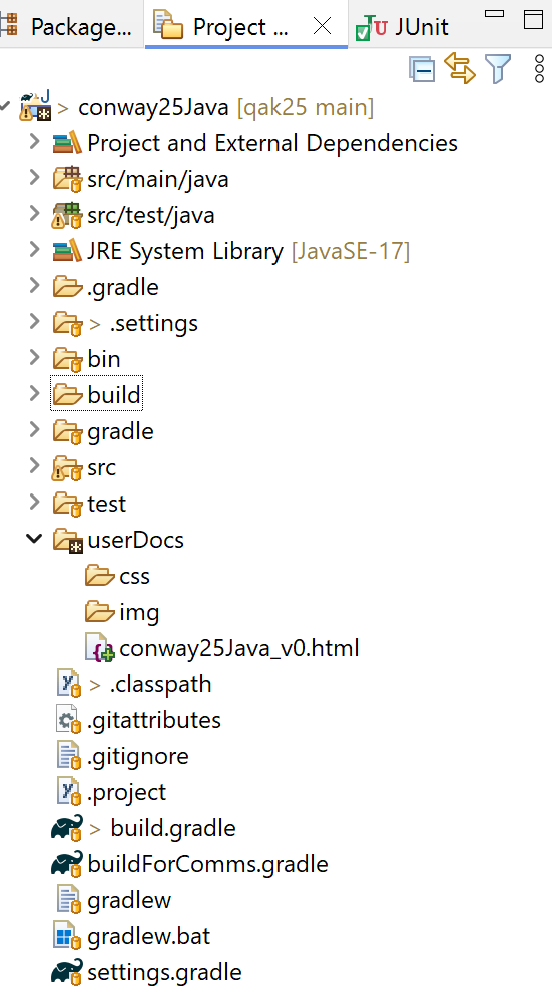

ConwayLife25¶
ConwayLife25: Obiettivi e fasi del lavoro
Parte I: da JavaScript a Java
-
conwaygui project
ConwayLife25: un microservizio Java
conwaygui service deployment
conwaygui standalone
conwayguialone project
Parte II: verso gli attori
Parte III: celle come attori locali
Parte IV: celle come attori distribuiti
ConwayLife25: Obiettivi e fasi del lavoro¶
Il Gioco della vita è un automa cellulare sviluppato dal matematico inglese John Horton Conway nel 1970 e costituisce un modello matematico utilizzato per studiare un Sistema Complesso.
La previsione del comportamento a lungo termine del Gioco della Vita è un problema che ha affascinato matematici e informatici per decenni e, nonostante numerosi studi, non esiste ancora una soluzione definitiva e generale, per alcuni motivi:
Complessità esponenziale: Il numero di possibili configurazioni di una griglia di celle aumenta in modo esponenziale con la dimensione della griglia stessa. Questo rende impraticabile un’analisi esaustiva di tutte le possibili evoluzioni.
- Comportamento caotico: Piccole variazioni nella configurazione iniziale possono portare a risultati
completamente diversi nel lungo periodo, rendendo difficile stabilire delle leggi generali che governino l’evoluzione del sistema.
Emergenza: Dal semplice insieme di regole del gioco emergono comportamenti complessi e imprevedibili, come la formazione di strutture stabili, oscillanti o in continua evoluzione.
Anche con una griglia finita, prevedere il comportamento a lungo termine di una configurazione iniziale rimane un problema complesso. Il numero di possibili configurazioni, anche se finito, può essere enorme, rendendo impraticabile un’analisi esaustiva.
Inoltre, a differenza di molti altri sistemi fisici, il Gioco della Vita non è sempre reversibile. Ciò significa che, data una configurazione finale, non è sempre possibile risalire univocamente alla configurazione iniziale che l’ha generata. Molte configurazioni finali possono avere più configurazioni iniziali che portano allo stesso risultato.
Dunque, determinare la configurazione iniziale che porta a una data configurazione finale nel Gioco della Vita è un problema molto complesso e, in generale, non esiste una soluzione algoritmica efficiente.
Nonostante le difficoltà, sono stati fatti numerosi progressi nella comprensione del Gioco della Vita, che includono la Classificazione delle configurazioni (still life, oscillatori, spaceship, …) e Teoremi parziali
Il Gioco della vita viene qui usato come applicazione di riferimento per realizzare un sistema software per passi successivi, introducendo ad ogni passo qualche nuova caratteristica che lo rende via via un Sistema Complicato.
Sistema Complesso¶
Molte parti con interazioni imprevedibili: Un sistema complesso è più simile a un ecosistema, dove molte entità interagiscono in modo non lineare e le loro interazioni possono portare a comportamenti emergenti e difficili da prevedere.
Difficile da ridurre a parti isolate: Le parti di un sistema complesso sono interconnesse in modo così stretto che è difficile isolarle e analizzarle singolarmente senza perdere informazioni cruciali.
Comportamento emergente: Il comportamento complessivo del sistema non può essere completamente compreso analizzando le singole parti, ma emerge dalle interazioni tra di esse.
Sistema Complicato¶
Molte parti, ma interazioni prevedibili: Un sistema complicato è come un grande puzzle con molti pezzi. Ogni pezzo ha una funzione specifica e le interazioni tra i pezzi sono ben definite e prevedibili.
Risolvibile con analisi dettagliata: Se analizziamo a fondo ogni parte di un sistema complicato e le loro interazioni, possiamo comprendere il sistema nel suo insieme e prevedere il suo comportamento.
procedere in modo usando linguaggi noti (JavaScript e Java) per realizzrae il gioco Conway Life> (si veda anche Conway Life play>);
impostare il prodotto in modo che possa ‘evolvere’ mediante aggiunte progressive di funzionalità e senza modifiche a quanto è stato già realizzato e testato richiamandosi ad alcuni Principi base della costruzione del software;
realizzare una pagina HTML che funga da dispostivo di input-ouput capace di interagire con un server via WebSocket;
trasformare il prodotto, usando SpringBoot, in un microservizio a sè stante, capace di comunicare con l’applicazione mediante scambio di messaggi usando MQTT fruibile in rete;
distribuire il prodotto come immagine Docker, così che del sistema occcorre consoscere solo la Vista esterna.
considerare la GUI come dispositivo evoluto di I/O e realizzarla come un microservizio a sè stante, capace di comunicare con l’applicazione mediante scambio di messaggi usando MQTT e opportune (da noi definite).
reimpostare l’applicazione Java come un agente (o meglio, un attore) intrinsecamente capace di interagire con il mondo esterno mediante scambio di messaggi, senza dover ricorrere a SpringBoot
introdurre Il linguaggio custom qak (un esempio di DSL) per la definizione di attori e per la loro interazione
il sistema viene impostato come un modello espresso mediante Il linguaggio custom qak
il sistema viene costruito usando
Ncomputer fisici, su ciacuno dei quali attivare una cellal’uso di un linguaggio di modellazione agevola il refactoring del sistema in quanto ‘nasconde’ i dettagli di implementazione del sistema e permette di concentrarsi sulle interazioni ‘ad alto livello’ tra le parti del sistema
ConwayLife25: il core e la griglia¶
Il punto di partenza è il ‘cuore’ del gioco, cioè la logica di calcolo delle celle vive e morte. Per questo calcolo è essenziale il concetto di stato di una cella e il concetto di vicinato di una cella.
Lo stato di una cella può essere vivo o morto e viene modificato in base al numero di celle vive nel suo vicinato, secondo le seguenti :
Una cella viva con meno di due celle vive adiacenti muore (per isolamento).
Una cella viva con due o tre celle vive adiacenti sopravvive alla generazione successiva.
Una cella viva con più di tre celle vive adiacenti muore (per sovrappopolazione).
Una cella morta con esattamente tre celle vive adiacenti diventa una cella viva (per riproduzione).
L’insieme delle celle forma concettualmente una griglia bidimensionale infinita, ma per ovvie ragioni, noi faremo riferimento a una griglia finita di dimensione
NxN, con3<=N<=10.In una griglia infinita, il vicinato di una cella è costituito dalle
8celle adiacenti (orizzontali, verticali e diagonali). Nel nostro caso di griglia finita, il vicinato di una cella potrebbe avere anche solo (ai bordi)3o5celle.In una prima fase, partiremo rappresentateremo la griglia come una matrice
NxNdi celle. Il vicinato di una cella può essere stabilito in base agli indici della componente della matrice che rappresenta la cella.In una seconda fase, la rappresentazione matriciale sarà usata solo per la rappresemtazione esterna della griglia (in una pagina HTML) mentre che scambia informazioni con le altre celle mediante scambio di messagggi.
ConwayLife25 in JavaScript¶
: realizzazione in JavaScript,
che permette la visualizzazione e il controllo della griglia all’interno in una pagina HTML
senza l’uso di alcun server.
La pagina propone anche pulsanti per avviare, fermare e terminare il gioco ed è organizzata come un
insieme di funzioni raggruppate in diversi file:

|
|
Principi di riferimento:
: ogni file javascript si occupa di un aspetto specifico del sistema.
: la logica del gioco life.js non si occupa dell’I/O, ma offre funzioni utili per l’I/O.
conway.html¶
<html>
<head>
<meta charset = "UTF-8" />
<title>The Game of Life</title>
<link rel="stylesheet" href="life.css">
</head>
<body>
<!-- sezione di OUTPUT -->
<div id="gridContainer">
</div>
<!-- sezione di INPUT -->
<div class="controls">
<button id="start">Start</button>
<button id="clear">Clear</button>
</div>
</body>
<script src="conwayGuiData.js"></script>
<script src="life.js"></script> <!-- logica del gioco -->
<script src="lifecontroller.js"></script> <!-- configurazione e controllo -->
<script src="conwayInput.js"></script>
<script src="conwayOutput.js"></script>
</html>
conway25JavaScript project¶
Costruzione del progetto |
|
Esecuzione del prodotto |
Apertura del file conway.html in un browser |
ConwayLife25 in Java¶
: realizzazione in Java di classi che svolgono i ruoli dei file della soluzione JavaScript. Le dipendenze tra le classi sono visualizzate nel diagramma seguente:

|
|
Principi di riferimento:
I files sorgente sono che riflettono diversi ruoli logici
La IOutDev interface è definita nel package della logica applicativa, come un che i dispositivi di Output devono rispettare implementando in modo opportuno il metodo per visualizzare una cella.
La classe ConwayInputMock.java viene introdotta per definire un (Mock object), rimandando la costruzione di un componente di input più evoluto ad una fase successiva.
IOutDev interface¶
public interface IOutDev {
public void displayCell(String msg);
}
In questa versione, la visualizzazione delle celle è fatta su System.out dal componente ConwayOutput.
Nel seguito, introdurremo modi pìù evoluti per visualizzare le celle, ma senza modificare la struttura del sistema e con ridotte modifiche al codice della classi.
conway25Java project¶
|  | Inizializzazione
Parte applicativa
Settaggio filtri per redere visibili resources e Gradle build folder |
Esecuzione del prodotto |
|

{kind=link}
build.gradle e Main di conway25Java¶
plugins {
id 'application'
id 'java'
id 'eclipse'
}
version '1.0'
java {
toolchain.languageVersion.set(
JavaLanguageVersion.of(17))
}
repositories {
mavenCentral()
flatDir { dirs '../unibolibs' }
}
sourceSets {
main {
java {
srcDirs = ['src/main/java']
}
resources {
srcDirs = ['src/main/resources']
}
}
test {
java {
srcDirs = ['src/test/java']
}
resources {
srcDirs = ['src/test/resources']
}
}
}
dependencies {
testImplementation 'junit:junit:4.13.2'
}
application {
mainClassName = 'conway.MainConway'
}
|
Si veda Creazione progetto con Gradle In questa versione vi sono dipendenze solo relative alla libreria JUnit per il Testing public class MainConway {
public static void main(String[] args) {
//configureTheSystem
Life life = new Life( 3,3 );
LifeController cc = new LifeController(life);
ConwayInputMock cim = new ConwayInputMock(cc,life);
//start the system
cim.simulateUserControl();
}
}
|
conway25Java testing¶
Per il Testing, eseguire:
gradlew teste aprire il filebuild\reports\tests\test\index.htmlper vedere il risultato del testgradlew runper vedere il risultato dell’esecuzione del programma
ConwayLife25 una GUI per Java¶
: realizzazione di una pagina HTML che funga da dispostivo di input-ouput
evoluto per l’applicazione ConwayLife25 in Java .

|
La pagina HTML svolge il ruolo di:
I files relativi alla sua realizazione sono:
|